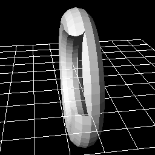
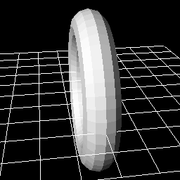

11. 使用3D模型！！¶
概要¶
本章中，我们将使用3D模型制作特效。在Effekseer中，3D模型可以作为粒子显示，或作为生成方法的生成位置。我们将使用这些功能来制作特效。
本章制作的特效1
本章制作的特效2
3D模型¶
Effekseer可以读取fbx或mqo格式的3D模型。fbx是一种可以从各种3D模型软件输出的格式，如Blender、Maya和3ds Max。mqo是一种可以从水杉（Metasequoia）输出的格式。
支持fbx动画。
有两种方法可以使用3D模型。
第一种是将3D模型显示为粒子。
模型
第二种方法是将3D模型设置为生成方法的生成位置。

生成方法
本章将解释如何使用这两种方法。
你可以通过下面的链接下载为本章内容预制的特效素材。
将3D模型显示为粒子¶
接下来将模型显示为粒子。
打开effect1.efkefc。
和精灵一样，在渲染设置面板中选择模型绘图方法。
然后加载模型Model/Sphere.mqo。
画面将显示你加载的3D模型。
对于不透明的物体来说没有什么问题，但有时你想让它们发光。
在这种情况下，在基础渲染设置面板中将材质设置为照明。
| 窗口 | 参数 | 值 |
|---|---|---|
| 渲染设置 | 渲染方法 | 模型 |
| 渲染设置 | 模型 | Model/Sphere.mqo |
| 渲染设置 | 剔除 | 双面可见 |
| 基础渲染设置 | 材质 | 照明 |

模型
有时你希望用模型的形状显示特效。
让我们设置图像并将UV设置为滚动。
参数如下。
| 窗口 | 参数 | 值 |
|---|---|---|
| 渲染设置 | 渲染方法 | 模型 |
| 渲染设置 | 模型 | Model/Sphere.mqo |
| 渲染设置 | 剔除 | 双面可见 |
| 基础渲染设置 | 材质 | 照明 |
| 基础渲染设置 | 混合方法 | 加法 |
| 基础渲染设置 | 纹理 | Texture/Aurora.png |
| 基础渲染设置 | UV | 滚动 |
| 基础渲染设置 | 尺寸（平均） | 1024,1024 |
| 基础渲染设置 | 滚动速度（平均） | 0,-8 |
然后你会看到特效沿着模型的形状流动。

有时有些模型可能有深度的渲染问题。为了解决这个问题，把深度写入打开。不仅是Effekseer，3D渲染都会有一种判断前后关系的方法。如果关闭深度写入，3D模型就不会影响到其他物体的渲染。看起来就会很奇怪。
当深度写入开启时，深度会正确显示。
|

深度写入：关闭 |

深度写入：开启 |
用3D模型设置生成方法的位置¶
模型除了用于直接显示外，还可以用于设置生成方法的位置。
你可以在模型的顶点或面生成粒子。
试一试吧。
打开effect2.efkefc。
将生成方法设置为模型。 然后加载模型Model/Sphere.mqo。为了看起来更为清晰，将生成模式设置为顶点。
将粒子的纹理设置为Particle.png。增大生成数量。
参数如下。
| 窗口 | 参数 | 值 |
|---|---|---|
| 基础设置 | 生成数量 | 90 |
| 生成方法 | 生成方法 | 模型 |
| 生成方法 | 模型 | Model/Sphere.mqo |
| 生成方法 | 生成模式 | 顶点 |
你会看到粒子沿着模型生成。

它也可以与丝带和轨迹组合使用。在这种情况下，丝带和轨迹将沿着模型的顶点生成。

最后，你可以通过下面的链接下载本章中制作的特效。
总结¶
在这一章中，我们使用3D模型制作特效。在下一章中，我们将使用F曲线实现复杂的运动。